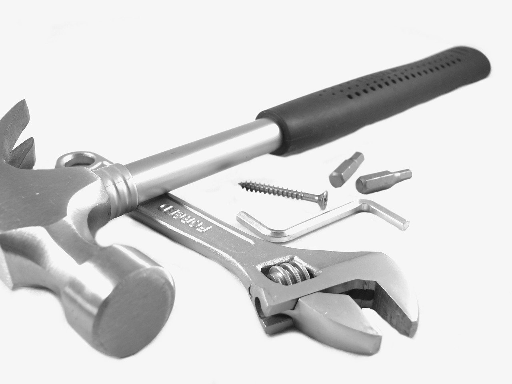

Overview
I’ve been planning to make a blog for a while. One sticking point in getting started was that I didn’t know what to use. Here is how I’ve arrived at my current setup.
Requirements
Hard requirements
- Hosting the site should be free to me.
- Support tags for organization.
- Actively maintained.
Nice to have
- Use my text editor of choice (Vim).
- Support version control.
- Doesn’t require me to learn a new programming language to get the most out of it.
- No ads.
Options
There is no shortage of blogging frameworks and services out there.
Services
Wordpress
The easiest hosting option for me to eliminate was Wordpress. I used Wordpress with Robohub’s podcast and that was enough for me. It is paid, if you want to include videos or integrate with Google Analytics. I also dislike the interface and the plugin architecture. You can spend a lot of time learning how to use Wordpress, which I am not interested in.
Substack
Next, I considered and played around with Substack. I like Substack a lot. They are free. Their business model is that they only make money when you make money, through people supporting you in a subscription model. When you start a blog on their site, it comes with the batteries included:
- the site looks good,
- they have great default pages already populated with text,
- it’s easy to hook up to Stripe to monetize,
- and they have good tools to engage with your readers through comments and discussion threads.
My major complaint with Substack is that it is not easy to organize your content. I also really wanted to use Vim to write. (Substack also has free podcast hosting in beta under the same business model. I may host a podcast on Substack in the future.)
Build it myself
I thought that I would make a minimal site where I could write directly in HTML. I tried this for a bit and it was a lot of work (no surprise), so I worried about my long-term ability to enjoy writing for this blog.
Another thought was that it would be difficult to do things like tagging, unless I manually updated tags pages, or I would have to build a static site generator. I rather find a suitable framework or use Substack.
Static generators
I then looked into using Github Pages for my blog. I’ve been hosting my personal website on Github pages. It’s free and I get version control and using my text editor of choice for free.
Jekyll
Jekyll meets my needs quite well, but I tried on two occasions to setup Jekyll and deploying it to Github. The errors that I was getting made me think that I needed to understand Ruby better, which I am not planning on learning in the near future, so I looked on.
Javascript frameworks
I tried many frameworks listed on Awesome Static Generators, including VuePress and Nuxt.js. Both of which were more complicated than I wanted and relied heavily on Vue.js. I’ve experimented with Vue.js and React and my impressions are that I like React much more, so I’m not very excited about using something that relies on another complex frontend framework. So I looked on.
Hexo
Introducing Hexo. I’m not sure how I found Hexo (it is on the Awesome Static Generators list, I probably saw a blog that I liked and found it on Github), but it meets most of my needs. Getting started with Hexo just worked, and in a couple of hours I had my first blog post up.
A couple of thoughts:
- Setup with
npmwas quick and easy.npmalso makes installing plugins for Hexo easy. - Hexo has both tags and collections (like nested tags) to help you organize your content.
- Many common themes such as the default theme support Google Analytics (for looking at traffic), Disqus (for comments), and hosting an RSS feed out of the box.
- The documentation is good and up-to-date and there are excellent video tutorials by Mike Dane.
- Hexo is actively maintained, as of this writing in January 2021.
- Hosting on Github Pages using a Github Action was easy.
- Modifying templates and themes have so far been straightforward.
Conclusion
For now, I’m happy with Hexo. It is out of my way so that writing is now my big obstacle—as it should be.
Have you started your own blog? Any frameworks that you like?